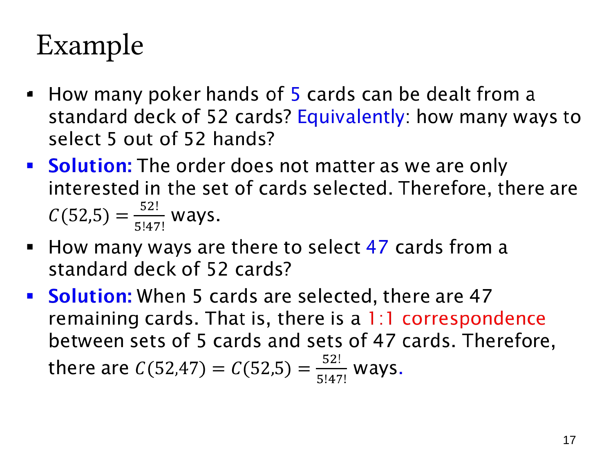

L1.6 · 第 17 页讲解原文
查看这一页课件

扑克牌手牌与补集对应
从标准 52 张不同的扑克牌中取五张组成手牌，只关心拿到哪些牌，不关心发牌的先后，因此数量为
C(52,5)=5!47!52!=2598960.
这里使用不放回选择，同一张牌不能入选两次。
第二问是选 47 张牌。虽然选的数量不同，却可以利用补集：每个五张牌集合 A 都唯一对应剩余的 47 张牌集合 S∖A；反过来，47 张牌的补集也是唯一的五张牌集合。
这是一个一一对应（1:1 correspondence），所以
C(52,47)=C(52,5)=47!5!52!.
计算时选少的一边通常更方便。
这两个问题的结果数相同，并不是两个集合大小相同，而是“所有五张手牌构成的集合”与“所有 47 张选择构成的集合”之间存在双射。
页中 “select 5 out of 52 hands” 按上下文应理解为从 52 张 cards 中选五张牌，而不是从 52 手牌中挑选五手。